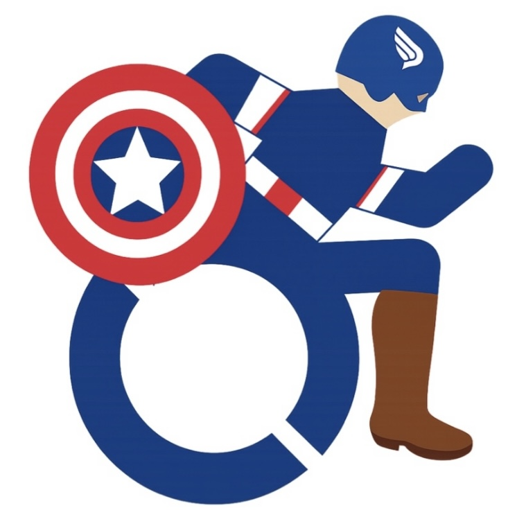

自己評価と第三者の視点を組み合わせて 特性の傾向をチェックするツールです
⚠ このツールは医療診断を行うものではありません。 結果は特性の傾向を示すものであり、医学的な判断や診断の根拠として使用することはできません。 不安や気になる点がある場合は、医療機関や専門家に相談してください。
Loading…
次に、この端末を 友人・家族・パートナーなど あなたのことをよく知っている人に渡してください。 その方が あなたについて同じ質問に回答します。
この結果は 特性の傾向を示すものであって診断ではありません。
このツールは医療診断ではありません。 結果は自己評価と他者評価に基づいた 「特性の傾向」を示すものであり、 専門的な診断の代わりにはなりません。 もし結果によって不安や困りごとがある場合は、 医療機関や専門家に相談することをおすすめします。